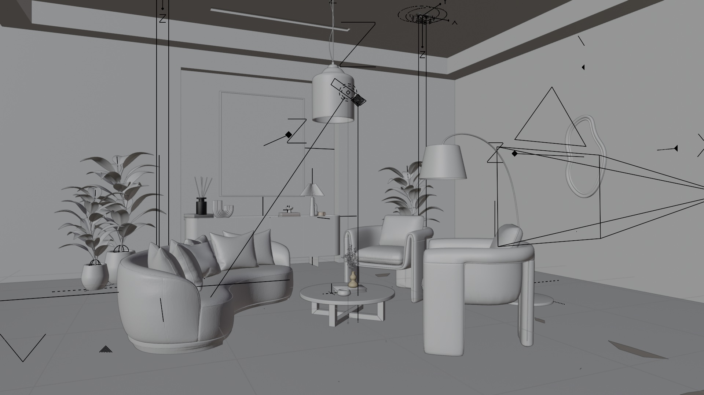
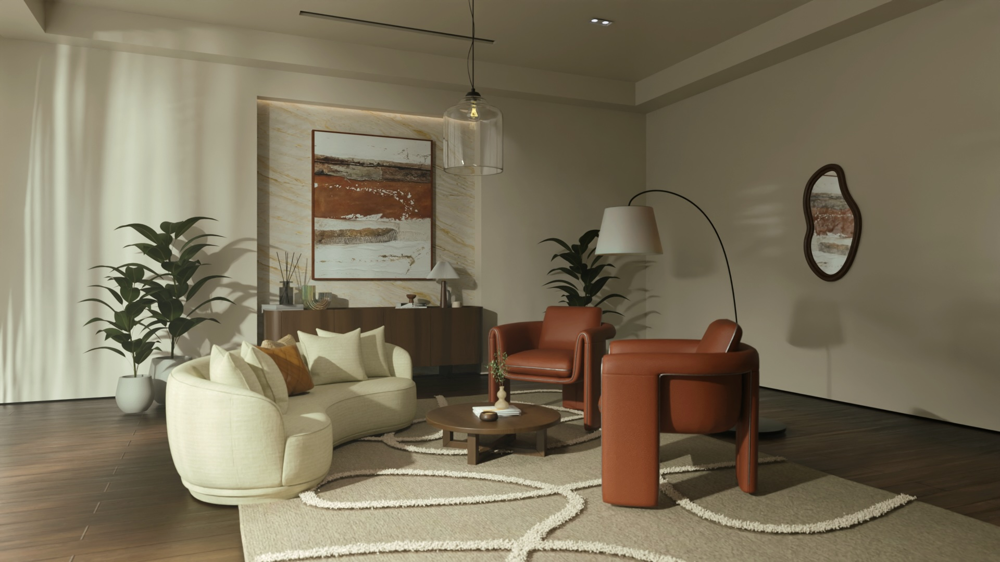
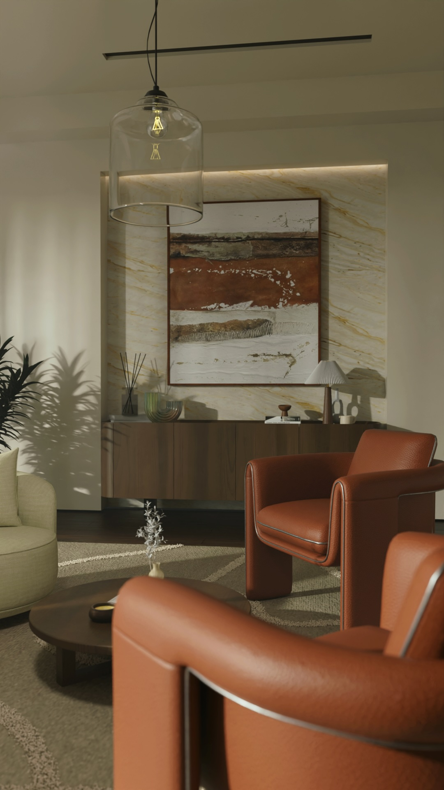

004 · 2026 · Interior Design
The Warm
Living
Continue
Project Overview
The Warm
Living
Natural light enters from the side, casting soft shadows that highlight the curvature of furniture and the texture of fabrics and leather. A restrained colour palette is used to balance warm tones with neutral surfaces, creating depth without overwhelming the space.
- Type Interior
- Design Tool AutoCAD
- Modelling SketchUP, Blender


The Warm Living // Before/After Comp.
#4A3A2F
#A85C3A
#D8CFC4
#F2EFEA
#6F7D5C

// Material & Light Atmosphere Study
Scroll
Contact